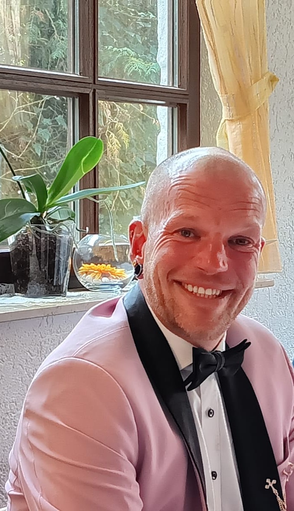

Mit Leidenschaft für die Sweetys
Heute ist Oli Tanztrainer der Sweetys. Sein Ziel ist klar: Seine Tänzerinnen und Tänzer sollen von Session zu Session besser und im Karneval immer bekannter werden. Für ihn ist das Team längst mehr als nur eine Tanzgruppe – und er sagt selbst: „Meine Sweetys machen mich verdammt stolz!“
Schönste ErinnerungDer 8. Februar 2020, als Oli seinen ersten Prinzenpaarorden der Stadt Wesel erhielt.
Drei WorteWild · Tänzer · Paradiesvogel
LieblingsgetränkSekt-Red Bull

Oli ganz persönlich
Wenn gerade kein Karneval ist, gehören Pferdesport, der Schützenverein Lackhausen, Freunde und seine Hündin Anabelle zu seinem Leben. Beim FKK schätzt Oli besonders den Zusammenhalt, den Spaß und die Offenheit. Für ihn ist der Verein wie eine Familie: laut, bunt und herzlich – und jeder soll so sein dürfen, wie er ist.
Sein Motto
„Sei wild, frei und immer du selbst. Außer du hast die Möglichkeit, Pirat zu sein – dann sei Pirat!“